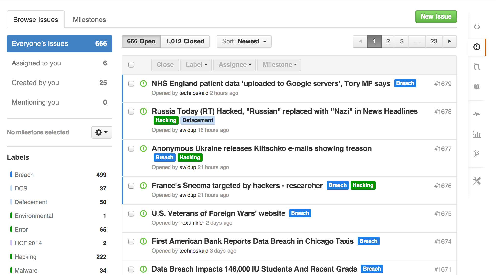

Participate in the VERIS Community Database (VCDB) Project
There are two ways to participate in the VCDB project.
- Find new incidents! Got a headline that says something happened that resulted in a data breach? We want to see it. You can add it to the list of issues to be coded (we use GitHub Issues to track breaches waiting to be coded).
- Finding new breaches not enough for you? You can code them into VERIS format for inclusion into the dataset. Amaze your friends, frustrate your enemies, be the hero you were meant to be!!!

I found an Incident—How do I Add It to the List?
- Identify a publicly disclosed data breach (gotta include the URL).
- Search our repository to make sure it isn’t already an existing issue ( github.com/vz-risk/VCDB and use the search box at the top). If you find an existing issue, but it doesn’t have that reference, add the URL to the body. We like multiple references! You'll need an account at github, but it's free and part of the fun of contributing to an open-source project.
- Create a new issue with the link in the body, the title of the article in the Subject, and if listed, add the organization name that was breached in the subject as well—this makes it easier to do searches.
- Later, rinse, and repeat!
I want to Code All the Things (into VERIS format)!!!
- Send an email to participate@vcdb.org and tell us you want to help out!
- We send you credentials to the data entry tool.
- You familiarize yourself with VERIS prior to claiming incidents. (veriscommunity.net). Questions can be sent to the same email as above.
- Find an unclaimed issue in GitHub and assign it to yourself.
- Code the incident in the data entry tool and submit.
- Close the issue in GitHub.
- Bask in your awesomeness!!! Do it again!

Example Videos
These videos will get you started with VERISizing incidents for the VCDB.